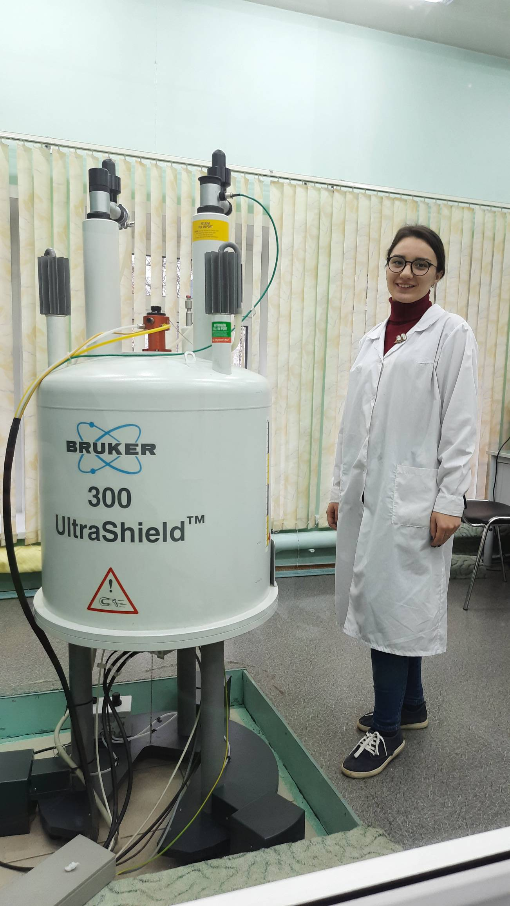
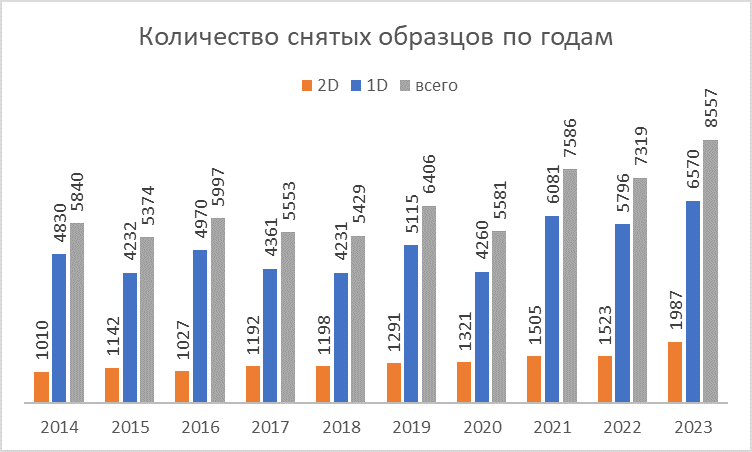

История развития ЯМР спектроскопии в Институте химии ФИЦ Коми НЦ УрО РАН
В Институте химии Коми Научного Центра в 2007 г появился ЯМР спектрометр высокого разрешения Avance II 300 (Bruker, Германия, 2006 г. вып.). ЯМР спектрометр стал значительным прорывом в исследованиях биополимеров и синтетических биологически активных молекул, позволяя проводить точный анализ структуры молекул, по сравнению с предшествующими ему приборами TESLA 80 и 100 МГц. Вклад ЯМР спектрометра 300 МГц в развитие науки в Коми Научном Центре был колоссальным. Он позволил исследователям расширить границы знаний о химических реакциях, структуре органических, и в т.ч. высокомолекулярных, соединений, а также применять новые методы анализа в различных областях химии (синтез, деструкция, модификация, реакционная способность).

- Успешно реализованы в прошедшие годы темы НИР Института химии, для примера из последних:
«Создание новых субстанций и материалов биомедицинского назначения на основе органических и неорганических веществ природного происхождения» Рег. № НИОКРТ АААА-А19-119021290108-6,
«Новые подходы к превращениям макромолекулярных соединений и комплексов растительного происхождения для создания технически значимых и биологически активных систем» Рег. № НИОКРТ № АААА-А18-118012390189-3;
АААА-А21-121011290107-5,
«Научные основы экологически безопасных и малоотходных технологий комплексной переработки растительного сырья, трансформаций изопреноидов, порфиринов, фенолов для направленного синтеза аналогов природных и полусинтетических веществ различного назначения» Рег. № НИОКРТ: АААА-А18-118012490385-8; АААА-А21-121011190042-0;
и №122040600027-6 "Развитие фундаментальных и прикладных аспектов комплексных физико-химических преобразований биополимерных систем: структура, наноматериалы, функциональные производные".

Количество снимаемых в год образцов продолжает расти – сейчас наблюдается 95 % загрузка от максимального возможного времени работы в год – 6000 ч.
ЯМР спектрометр активно помогал другим научным и учебным учреждениям Республики Коми, предоставляя доступ к современным методам исследования для студентов, аспирантов и ученых. Множество исследований, защищенных диссертаций и научных публикаций были осуществлены при помощи данных, полученных при помощи этого оборудования. Среди институтов ФИЦ, заинтересованных в работе ЯМР и регулярно заказывающих анализы в рамках НИР, РФФИ и РНФ следующие: Институт геологии, Институт физиологии, Институт биологии. Для примера, работы выполнялись в рамках тем государственных заданий.
- Институт биологии ФИЦ Коми НЦ УрО РАН:
№ ГР АААА-А18-118011190102-7 «Механизмы биогенной миграции радионуклидов и закономерности возникновения отдаленных последствий индуцированных у растений и животных в условиях хронического радиационного и химического воздействия»; № 122040600024-5 “Влияние ионизирующей радиации и факторов нерадиационной природы на биологические объекты и биогенная миграция тяжелых природных радионуклидов »
- Институт геологии ФИЦ Коми НЦ УрО РАН:
№ 1021051101666-2-1.5.1 “Развитие минерально-сырьевого комплекса Тимано-Северо-Урало-Баренцевоморского региона на основе эффективного прогнозирования, геологического моделирования, геолого-экономической оценки ресурсного потенциала и новых технологий переработки полезных ископаемых”
- Институт физиологии ФИЦ Коми НЦ УрО РАН:
«Биотехнология пектинолитических ферментов как инструментов структурного исследования растительных полисахаридов», «Выделение, структурная характеристика и физиологическая активность пектин-белковых комплексов», «Функциональные свойства и физиологическая активность гелей на основе пектинов» (2013-2016 гг.), а также «Физиологическая активность полисахаридов в зависимости от структуры (ГР № 01.200 107401) и «Физиологическая активность пектиновых полисахаридов, модифицированных в условиях искусственной гастроэнтеральной среды» (ГР№ 0120.0 602858) и FUUU-2022-0066 (1021051201895-9)
В 2008 г. Институтом химии Коми научного центра УрО РАН было приобретено по контракту с ООО «Брукер» от 09.10.2008г. дополнительное оборудование для спектрометра AVII300 для доукомплектации сверхпроводящего Фурье ЯМР спектрометра.
- В комплект дополнительного оборудования для спектрометра входит:
GRASP II z-градиентная электроника (включает высокоустойчивый 10А усилитель и соединительные провода), система подавления вибрации для частот свыше 8гц, калиброванные стеклянные трубки и спинер. Данные компоненты могут работать только в составе спектрометра.
Установив этот комплект дополнительного оборудования на спектрометр AVII300, фактически была проведена модернизация спектрометра. А именно: GRASP II z-градиентная электроника (высокоустойчивый 10А усилитель) позволила проводить эксперименты на спектрометре AVII300 с использование градиентной приставки. Характеристики воспроизводимости и стабильности работы спектрометра AVII300 значительно улучшились после установки на него системы подавления вибрации для частот свыше 8 Гц. Установленные калиброванные стеклянные трубки и спинер являются неотъемлемыми деталями спектрометра, используемыми в каждом измерении.
Таким образом, проведенная модернизация ЯМР спектрометра AVII300 с установкой в его комплектацию вышеуказанных компонентов позволила значительно улучшить качество снимаемых спектров и перечень решаемых научных задач.
Однако, с течением времени, технологии развиваются, и современные требования к точности и скорости анализа становятся все более высокими. Сейчас ЯМР спектрометр, который был приобретен много лет назад, морально устарел и не соответствует современным стандартам.
ЯМР спектрометр мощностью 300 МГц является достаточно мощным и универсальным инструментом для многих химических исследований. Однако, для определенных задач, особенно связанных с более сложными исследованиями природных полимеров, некоторых биологических систем, белков и других сложных органических соединений, мощность 300 МГц может оказаться недостаточной. Например, для изучения сложных белков или больших органических молекул, которые имеют множество атомов углерода и водорода, для достижения необходимого разрешения и чувствительности может потребоваться более мощный ЯМР спектрометр, например, 400 МГц или даже более. Также, для выполнения экспериментов с высоким разрешением и для исследований, требующих более точного определения химической структуры соединений, более высокая мощность спектрометра может быть необходима.
Для дальнейшего успешного развития научных исследований в Институте химии необходимо приобретение нового современного ЯМР спектрометра, который обеспечит более высокую точность и эффективность анализа химических соединений.
На сегодняшний день существует несколько известных производителей современных ЯМР спектрометров, которые являются лидерами в данной области (но не поставляют в Россию из-за санкций):
1. Bruker: Компания Bruker предлагает широкий ассортимент ЯМР спектрометров, включая высокоразрешающие магниты, автоматизированные системы и инновационные технологии для различных областей исследований.

2. Agilent: Agilent Technologies также известна своими современными ЯМР спектрометрами, обеспечивающими высокую чувствительность и точность анализа.

3. JEOL: Японская компания JEOL предлагает современные ЯМР спектрометры с высоким разрешением и широкими возможностями для исследований в различных областях химии.

Альтернативой является Q-One Tech (Beijing) Co., Ltd. — новый, но уже популярный производитель ЯМР-спектрометров со штаб-квартирой в Пекине, Китай. Ориентировочная цена ЯМР спектрометра Q-One 400 МГц – 90-100 млн.р.